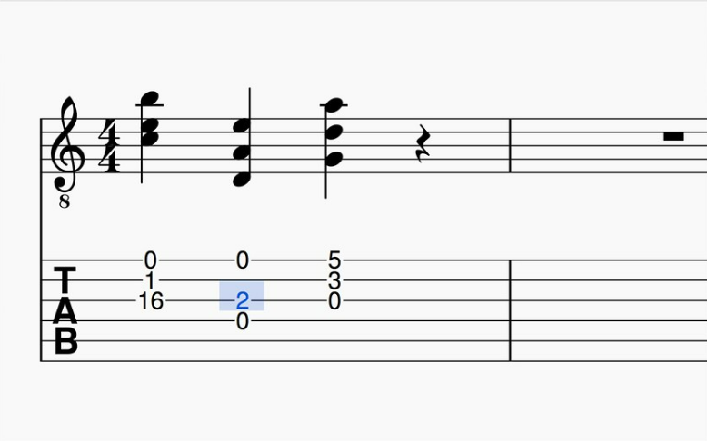

A good place for beginners to start out is learning the basic chords associated with playing the guitar
If you wish to learn a different style of guitar more suited for piano players/listeners you can try learning tabs and classic songs that anybody can recognise
